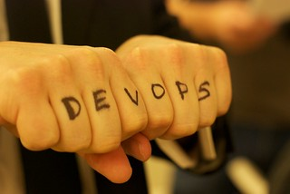
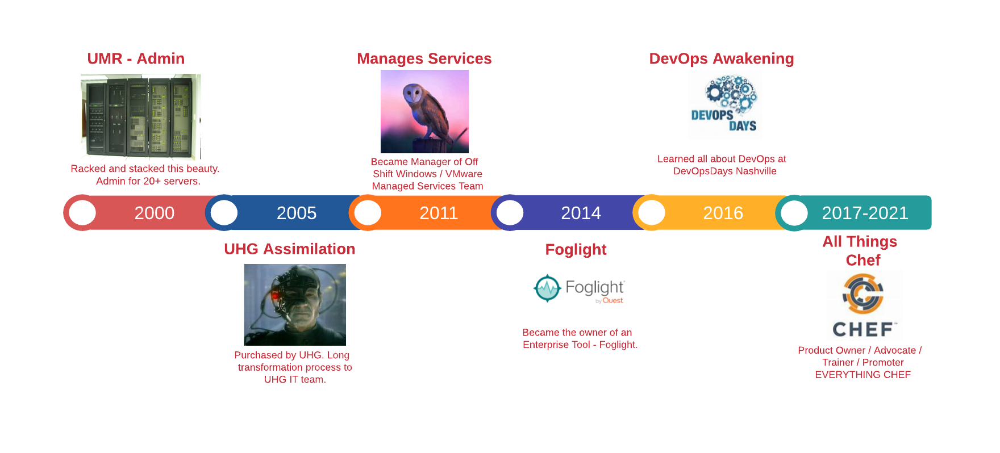
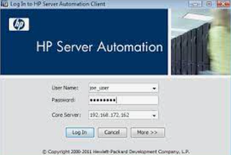
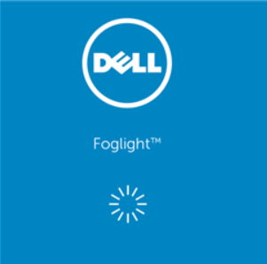
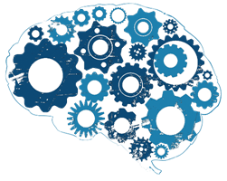
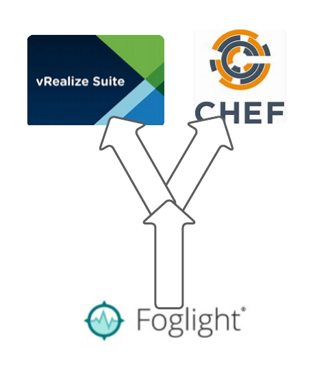
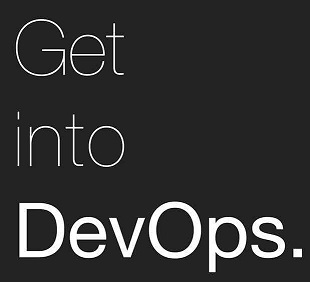
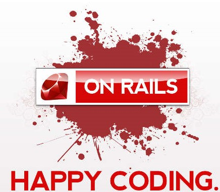
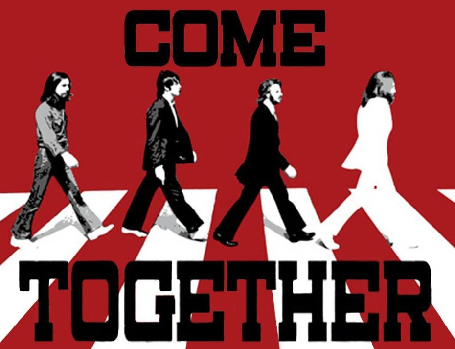
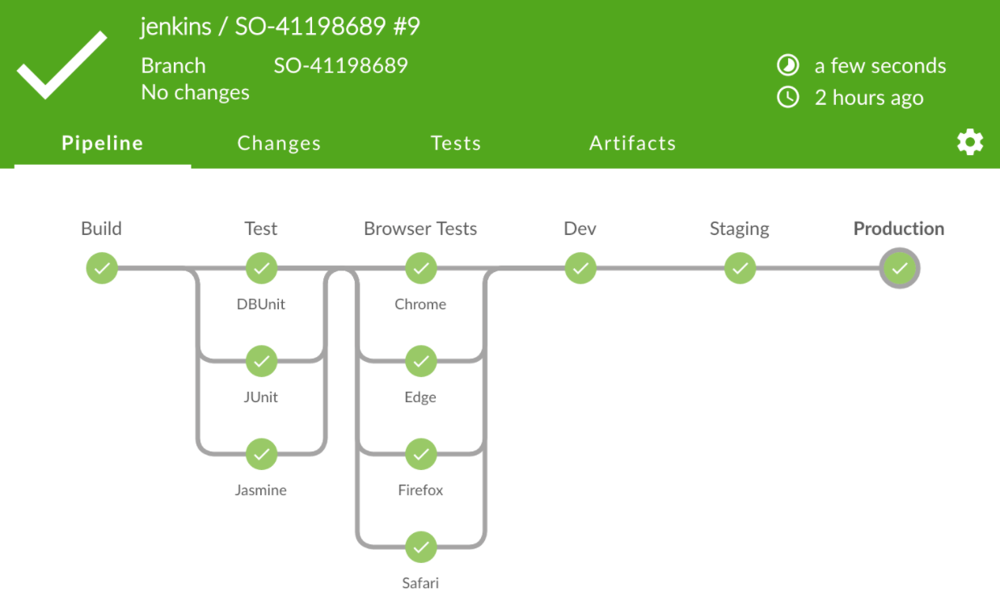

class: inverse layout: true --- class: center, middle ## My DevOps Journey with Chef ______ <br>  ??? This is the Remark.js HTML Slideshow Version of https://snohio.github.io/devops/ --- name: The Saga Begins # My DevOps Transformation Experiences ___  ### Welcome to the Presentation ***This one is going to be different!*** ### Four part Series on my last 5 years of DevOps - The Saga Begins - From my Aha moment to Building a Team - Putting DevOps into Practice - How we used DevOps to build a Chef Enterprise Solution - Transformation Tips - DevOps Transformation / Where you can start - Cooking up Awesomeness - How Organizations Can Use Chef to Drive DevOps ??? So, now you are asking "How do I start my own journey?" It really depends on the side of the house you are on, but as my background is in Operations and that is typically where folks are coming from to start engaging in DevOps especially with Chef or other similar tools, here are some places that you can start. --- <br><br>  ## My DevOps Timeline ??? ## Where is started This story starts back in the year 2000. I was hired to support a few dozen servers for an health insurance company that specialized as a Third Party Administrator. I basiclaly took ownership for the datacenter, including networking, user management, email and database infrastructure. I have long believed in "A lazy Administrator is a good Administrator" because they automate all of the mundane tasks. That includes builds, user creation, log gathering etc. Little did I know that this mentality is the basis for our current Agile DevOps movements, not to be lazy, but to move fast. ## Flash Forward 10 years We were purchased by a very large Healthcare Insurance company and it took about another 5 years to "assimilate" our group. During that time we merged with other groups and growing to support 3 datacenters with about 150 servers. I ended up on what was called the "Managed Services" part of the organization. We were were responsible for the OS support for then, about 30 thousand systems, Windows and Linux. With the adoption of virtual servers, that growth continued at a rapid pace. The Managed Services team was quite large and they were responsible for setting, enforcing, managing all of the OS standards, assisting with new builds, helping application teams with installing their applicaitons, applying security and doing our best to keep the application teams from changing the configurations on the production servers. We were also responsible for monitoring and remediating any issues with those systems. In 2011, I became the manager of the Off Shift team, those responsible for overnight support and making changes required by the apps teams. I had a team of about 6 on shore and 6 "off shore" team members. Much of the automation for the builds and tasks were done with HPSA. ---  ## HP Server Automation - Was our Primary Deployment and Patching Tool - Used with HP Operations Orchestration for new builds - Now Called Data Center Automation by Microfocus ## The Model - Applications and OS Patches had to be coded in Java to execute Bash or CMD / PS. - As system numbers and application teams grew, BSA team didn't. - Work queued up, using Agile, that only moderately help velocity. ??? ## What it is HP Server Automation (now Microfocus Datacenter Automation) was the tool that we used to manage deployments of agents, applications, patches and anything else we needed to get to the servers. It comprised of an agent and required ports opened back to the HPSA servers. The scripts were written in a combination of bash or Powershell / MS Dos commands wrapped in some Java script. Even though there was an agent involved it was still a push technology (or atleast the way that we utilized it.) This combined with HPOO (Operations Orchestration) we were able to build VMs and deploy then execute HPSA jobs to complete the configuration management. This is an early form of what we current can do with Chef or other configuration management tools. ## How we used it We had an internal team called the BSA (Business Server Automation) team that managed the infrastructure as well as all of the development and deployment of the packages. Server Admins could run SA jobs to complete tasks, and some of us wrote basic deployment packages, but for the most part they were all written by the BSA team of about 8 people. This single threaded packaging process caused many delays in getting your application packaged and deployed. It required a lot of coordination, building and testing, between the team that needed something deployed and the BSA team. There was a long line of delay and if your application didn't have security needs, it often got bumped down the list for more critical deployments. The BSA team did employ Agile into their process which helped them a little, but was still far from ideal. What took 9 months now only took 6. ## The problems of queue worked As a System Admin, I was often frustrated by the delays in getting items deployed and as I worked with product owners (especially ones requiring agents on servers) I could feel their frustration to. Often we have to manaully push things to servers going around the BSA processes. This meant writing Powershell scripts to connect and deploy. Later, this will play a big part in my thinking when building a model for working better. ---  ## Team Arrangement - Team was divided into Development, Engineering and Operations. - Each team supported multiple tools. - I managed the Operations team. ## Lessons Learned - Engineering would poorly hand off Operational tasks - My team didn't have hands on knowledge of building the systems - Engineers worked on other tools and hard to keep focused on Foglight ## Foglight - The Monitoring Tool - Was built originally by Quest, Dell bought Quest, Dell spun off Software Division, became Quest again. - Used for collecting performance and configuration data from VMware vCenters and other hypervisors - Codified and Customized a lot of reports and built an Auto-Allocation engine to determine where VMs should be provisioned - The tool did not scale to our needs, so we had to over-engineer. ??? ## Moving to Application / Tools Owner In 2014 I changed roles to support a product called Foglight - a virtual machine monitoring tool originally created by Quest Software and then was sold to Dell when later spun off their software division only to be named Quest again. We had three separate teams to support all aspects of Foglight. We were broken down into teams by roles which didn't support a single tool but supported multiple tools. Our engineering team was responsible for Proof of Concepts, the Systems and Functional Designs as well as building and deploying the environment. They would create documentation, sometimes useful, then hand it all off to the Operations Team. In the case of Development, that team did the designs for Dashboards and any customization for data in or out processing as it tied to others. This would often run on the same infrastructure as the tool itself, in Java, which would strain the system due to the amount of data it processed. One of the very unique things we did with Foglight is built an allocation engine which would gather the data from all of the hosts and determine which had the most capacity available. This would lead to more engineering work to scale with the number of servers and rebuilds and redeploys. Towards the end of it's life, I requested that my highest level operations folks take over the engineering with the vendor in order to gain the knowledge that was needed to support such a complex environment. In this lesson of my career there, it was about hand offs and how to support a product exclusively. Having everyone on separate teams really impacted my ability as a product owner. Like the BSA team, we started to employ some Agile processes, creating features and user stories and tracking in CA's Rally Agile product. Again this helped a little, but I still struggled with our Engineering folks in tracking their work. We saw about a 30% improvement, and at the very least the Operations team knew what was going on. ---  ## That Day I Had the Aha Moment ### Some Backstory - Dell Foglight was at our End of Life. - We were deploying vRealize suite & vROps which competed with Foglight. - Chef was in a PoC by another team, coming to our org to build & support. - Struggling with being Engineering and Ops. #### Enter DevOpsDays 2016 - [November 10th, 2016](https://devopsdays.org/events/2016-nashville/welcome/) | [John Willis](https://www.linkedin.com/in/johnwillisatlanta/) (Phoenix Project) | [Nathen Harvey](https://www.linkedin.com/in/nathen/) (Chef) #hugops | | :------------------------------------------------------------- | :----------------------------------------------------------------- | |**[Jason Hand](https://www.linkedin.com/in/jasonhand24/) (VictorOps) ** | **[Andrew Clay Shafer](https://www.linkedin.com/in/andrewclayshafer/) Red Hat** | ### That is when I fell in love with DevOps - What I love about these events: Local, Inexpensive, External Voices - Find a [DevOpsDays event](https://devopsdays.org/) near you! - My [DevOps for Tweens](https://www.youtube.com/watch?v=U2-PzeiQEaE) Ignite Speech at DevOpsDays Columbus- 2017 ??? ## Leading Up to DevOpsDays DevOpsDays 2016 could not have come at a better time. It was a buzzword high up in our organization but more as a concept than a reality. I had recently read The Phoenix Project and that hit home when it came to the Operational folks and Applications Teams. Going into DevOpsDays I knew Foglight was going away and was starting to take on vROps (because it was the same as Foglight) and beginning to take support and operations of this product called Chef. I knew a little about Chef and knew that HPSA was on the way out and the BSA team that supported HPSA was moving to the vRealize Stack utilizing Chef for the Configuration Management aspect of the builds. They along with our OS Managed Services Compliance team was using Chef and Inspec to confirm systems were built correctly. I knew of the connections between Chef and DevOps but it hadn't quite sunk in yet. ## Guided by Voices I travelled to Nashville which was the closest DevOpsDays to me and as I was sitting in the first days of key notes, my eyes were opened to a whole new world. All of those things that I found troublesome - sitting in queues waiting for work, documentation handed down to support, not having visibility to the whole picture, end to end, design to development to support, I suddenly *got it*. Andrew Clay Shafer taking about DevOps being "hard", as in the culture to accept. John Willis giving an update on where we were and where we are in the community, Suzie Prince talking about how to sell DevOps to leaders and day one wrapped by Nathen Harvey talking about Developers struggling to buy in. Day two was even more eye opening with Jason Hand talking about Blameless PostMortems and ChatOps. The latter being one of the most important practices that I almost immediately put into practice when I got back home. ## Open Sessions One of my favorite things about DevOpsDays are the Open Sessions. These are PostIt driven workshops that are made up on the fly. If there is something you want to talk about, throw it out there and see if others want to engage. It was all about community! In fact everything was about community. Had never experienced something so open, community driven, everyone engaged events, ever. And I had even been very involved in promoting local music in my community (another story for another time.) ## I left that day I left that event forever changed. It completely drove my career from that point forward. I would no longer advocate for managed services, separate teams supporting a product. I was from then until now going to be an advocate for a DevOps culture. ---  <br><br><br><br><br><br> ??? ## The Road Less Traveled Soon after I returned from that trip, we were - like all good fortune 10 organizations - going through another reorg. It was at that time that I had to make a choice of products to support. vRealize or Chef. I had already engineered with my team the vROps stack and started building out our Chef Infrastructure. But now to choose which I wanted to own and build a team to support. I had convinced my leaders that we needed to break the model of three teams to handle each aspect and we were going to put engineering and development and ops all togeter to support a tool stack. It was a difficult choice because I knew that vRealize would be more strategic but also knew that vRealize was not going to support my desire to spread the message about DevOps. it was not a DevOps tool. It was monolithic, it required very special expertise in developing Orchestration and Automation tools, and that was going to be a different team entirely. In fact it was the very same BSA team that worked in a vertical and not something I was ever going to control. I went back and forth a few times, but in the end I had made my decision. I think I surprised my boss when I told him that I wanted to take ownership of Chef. In hindsight, it was not my best career move, but I still would not have traded it for the world. I wanted to (and still want to) spread the DevOps love. `#hugops`. --- # Putting My Awakening into Practice ___  ## How DevOps Helped Drive Chef - Building a Team to support the operations of a large Chef environment - This will consist of: - Engineering - Operations - Development - We want to practice Agile DevOps <br> Thus in 2016, my new **DevOps Enablement Services** team was born. ??? ...and so my adventures into Chef begins. As I took the role of Product Owner for Chef with the ability to build a team ready to support all of the needs that were forthcoming, it was important to build the team in a "DevOps Model". What does that mean to me? Well, we were certainly going to have plenty of Operations tasks - deploying and maintaing the infrastructure as well as the deploying the Chef Client to thousands of servers and making sure they stayed running. This would also require some levels of continous engineering, monitoring best practices, as well as manage the scale we were about to embark upon. Initially we were set to deploy and manage about 8000 nodes but knew that once that "Proof of Concept" was going to deliver value, that we would within a year expand to our entire fleet - consisting of at the time about 60 Thousand Nodes. I knew that, while we were not initially responsible for the Community of Practice for Chef that we would have to participate and drive as much adoption through leading by example. We would need to participate in some coding efforts as well as possibly extending usability and isolation. This would require a few Devs. Let's take a look at how I did that. --- ## Some of my Guiding Principles or Dogma ### No Handoffs - **Engineering & Development:** Learn by Doing - **Documentation:** Run Books, Notes, Engineering designs, Etc. - **Tasks:** Take control of everything you can! ### Make Work Visible to Everyone - **Bring in the good stuff from Agile** - Stand ups - Retrospectives - Post Incident Review ### Communication Makes the Team Work - **Chat Ops:** Don't be afraid to ask in public - **Office Hours:** Can include Lean Coffee, Happy Hours, Water Cooler ??? First off, lets start with some of things I learned that formed my DevOps Guiding Principles or Dogma. To begin that, I'll start with the No Handoffs. This came from my lessons with the HPSA / BSA team and other items that required "requests" where we waited for other teams to prioritize the work that I needed done before continuing. This is on of the key benefits of Agile / and Agile DevOps. Also in the No Hand Offs category is within the product itself. Having a separate engineering team that is going to work on design and implementation then "hand off" support through documentation and training. Engineers like shiny and new and are always sought for other projects. Including Engineering ON the team keeps everyone in constant communications. It was also important for the engineer(s) to lead operations through the build out / install process. Next is to bring in what we learned about Scrum and Agile. The Agile Manifesto created in 2001 was great for streamlining the development process and got us further away from a waterfall model but its rigidity made it difficult to apply to Operations and somewhat to DevOps. However, some of the practices that were created by Scrum and Agile are perfect for DevOps. Those are the practices that make work visible to all such as daily standups, demos and retrospectives, and post incident reviews. My last principle that I wanted to be sure to include in the new team is communications. This revolved around the notion of ChatOps. Jason Hand's guide to ChatOps opened my eyes to a world where we didn't have to email everything and could have a more valuable stream of communications. Daily Stand ups also improve those communication channels as well as open community office hours, water cooler chats, lean coffee and happy hours. --- ### Roles & Cultural Diversity - One Engineer (US) - Two Operations (US) - Three Operations (IN & PH) - Two Developers (IN & PH) ### 24 x 7 Support Important - Established On Call 12h splits. - Everyone was in the rotation regardless of skill or role. ### Knowledge - All OS (Windows, Linux, AIX/Solaris) - VMWare: vCenter / ESXi - Developers knew Java, Python, some Ruby  ??? So as I thought about that dogma, putting together a team that could fit the roles and personas that were necessary, it took a bit of time. I was limited in members I could select, comprised mostly of the three teams mentioned earlier. I grabbed the engineer who had been working on the PoC for deploying Chef, my two best US Operations folks that worked with Foglight, one of which had been working deeper on the engineering side, the other with leadership and ITSM skills. I had previously hired two folks from India and one from the Philippines. Shortly there after added a few developers from India and Philippines that could help with building the tools we needed. Back on the US side, I brought in an intern fresh out of college to be my US developer. One thing that was vitally important to me was that we have 24 x 7 support and that everyone would participate in the on call rotation. Engineers don't like to be on call, but in my experiences, when your most knowledgeable team members are on call, things will typically be forever fixed. There is a disconnect between less knowledgeable operations staff trying to have things permanently fixed. Outside of the US covered from Midnight to Noon Central and US from Noon to Midnight. Our On Call team member was also responsible for changes made during those periods. From a skills perspective it was important to cover all OSes as we would have to support the client for Redhat Linux, Windows and some AIX and Solaris. We also added folks with development experience with Javascript, Pyton and Ruby. As the team grew, I was careful to ensure that we stayed balanced. I named this team the **DevOps Enablement Services** team so that we were prepared to take on additional tools that provided Services that empowered DevOps to our organization. --- ## Practices and Principles Employed #### Here is what we did and what worked what didn't. ### Kanban / Agile: Iterations & iterations - Went from SwiftKanban to CA Agile (Rally) to GitHub. - Eventually landed on our own form of Scrumban on GitHub. ### Stand-ups, Demos, Retrospectives, Post Mortems - Some of this is easier in theory than practice. - This is the stuff that really takes a commitment to perform. ??? These are some of the DevOps Practices and Principles that we employed. All were not without their challenges and I'd like to go through some of them. ### Kanban Most of us were familar enough with Kanban and Agile and brought that into our practices for Chef. As a company we were embracing Agile, although like any good organization, modified it to fit the higher ups ideas of Agile. It was loosely based on the Scaled Agile Framework. We moved from Swift Kanban to CA's Rally. We had a scrum master assigned to us and those early days of figuring out what we needed to do really benefitted by writing solid Capabilities, Features and User Stories. One of the difficulties with strict Agile is that our engineer and some ops folks had a tough time using it for daily work. It is a real culture shift for someone who is used to doing what is needed when it is needed and planning is difficult. Another issue with Agile is that you really have to work to get operations tasks planned for, especially break fix. We had an 80% rule which allowed for some flexibility as well as made sure to plan for those on call to be unavailable during their week. As time went on, we lost our scrum master and had split up those duties among ourselves. This required folks that didn't generally do planning and writing user stories and owning features to add that into the work schedule. We were also putting more and more work into Github so after a lot of trial and error, we comfortably landed on just using GitHub for issues and Project kanban tracking. We were pretty much practicing Scrumban which is exactly what it sounds like - Scrum with Kanban. ### Scrumban / Agile Stuffs One of the things that was important (and is with Agile) is Iterations. Working in small amounts, getting a little bit done and not being afraid to change the things that aren't working. So along with the tools that we used, we also put into practice daily stand ups. This took a variaty of forms and methods, we did it daily on the phone to a couple of times a week and sprinkled in some "virtual stand ups" using Flowdock, our Chat tool. This was something I picked up from a DevOpsDays Open Spaces discussion. Regardless of the approach, just keep doing it! Over and over and over. That goes for any of these practices and principles. They call it a practice for a reason, because you have to do it over and over again. Along with those Stand Ups we did weekly Demos to showcase our work. It gave everyone a chance to show off what they did and hopefully share some lessons learned. This also is a great tool to provide visibility and accountability. It also was a great place to have corrections and spawned ideas for continued enhancements. Sometimes we'd come away from demos with 3 or 4 new ideas to continuously improve the products. We later offered to have these 100% opened to the community as it helped us show our internal customers the work we were doing. Lastly the Post Mortems which we preffered to call them Blameless Post Incident Reviews. We typically would only do these as needed and tried to find a non-biased person on our team or another to host them. We stuck with a form created internally to gather the information and set the plan forward. The most important thing is to keep them blameless. --- ## More Practices and Principles Employed ### ChatOps (alerts, notifications, visibility) - Created a number of integrations in *Flowdock*. - It's hard for some to embrace. ### *Everything* as Code (in GitHub). - Documentation, Notes, Issues, Projects. ### Failure is always an Option - Know when to pivot! - Learn from it as a group (PIR) - Self Healing failure story. ??? ### ChatOps One of my favorite practices that I picked up at DevOpsDays was ChatOps. Personally I have always been a "social Internet" user - even before the Internet. I ran a BBS specifically so folks could chat with the "SysOp" and in college I spend many hours in the lab on a telnet-based chat forum and even running an IRC server on our Vax. So it was pretty natural to find it so appealing. There were other folks at our organization starting use Flowdock - also a CA tool - and we jumped on that right away. We created some integrations with Rally, GitHub and our monitoring platform. ChatOps was actually one of our most successful practices. Some folks on the team struggled with communications, but having that open to them allowed them to be who they were. It made for more transparent conversations and I always encouraged folks to "ask in public". It greatly reduced my email, or at least the ones I cared about. Flowdock became the center to our Chef community and we ended up created a number of custom Bot integrations for Chef, our pipeline and support functions. One of the few struggles was getting everyone to participate - at least a little bit. Our virtual stand ups helped with that to some degree. ### Everything as Code Everything as Code is one of my newer favorite practices. It was something that I didn't really learn until I was about 3 years into leading the team. One of the challenges with DevOps - especially for former server operations folks such as myself - is that they are just not comfortable with source code management. I have been scripting stuff for as long as I have been in IT. Even back in college, I had a job at the first public Internet Service Providers in Cincinnati. I would write code using a tool called "Expect" that would log in to systems and pull information from them that we used for billing and other things. I would always write code and save it to some network storage and then test and execute it from there. Using a source code tool was never a part of my culture. It was suggested to me that we start doing all of our documentation in markdown because we kept changing wiki platforms and it was a matter of rewriting content. Markdown would become our last content format. That process opened my eyes to all that markdown could be used for. I started putting all of my notes into a GitHub repo using Visual Studio Code - moving them from One Note. Public documentation was put together in markdown and wrapped into a GitHub pages form using Docusaurus. Issues and issue templates were created - which drove GitHub usage as we transitioned from Rally to GitHub projects. My world became everything as code and I started living life as a developer. Still to this day, presentations like this one are done with markdown (with react.js extensions) using Docusaurus to generate the content you see here! It really helped me learn and embrace the DEV in DevOps. ### Failure *is* an option It was important for us to remember - to embed in our new DevOps culture - that failure is always an option. Without failures, we cannot make improvements. What was critical to the success was that we learned from those failures and changed from the path. The sooner you can do that, the less time is wasted. This is one of the critical pieces of the Demos, Retrospectives, PIRs, everything we just did above. Story time! One of the times that we failed to fail fast enough was when we were working on a large self-healing project. Our team had gotten larger with more developers and it was a period that we were not communicating the best - especially with standups and demos. Our engineer at the time missed a few and we just were not as good about doing them on a scheduled basis - mostly because we were all doing a lot of work. The developers started going down a path with a simple principle in mind - that they were going to basically create a "watchdog" service that ran on the systems that would then run commands locally to fix the broken Chef agents. About 6 months of effort went into the design both on the watchdog agent as well as an API and database functions built around it. During a demo when it was completed, our engineer flatly stated that it would not pass a security review and getting that to pass would be a monumental effort. It was something that was taken for granted that it was doable but really never discussed in preplanning. Eventually about 50% of the work was scrapped. There were a LOT of take aways from that effort and while we did lose about 3 months of work, we learned some very valuable lessons as a team. In the end we had a better product to support our Chef Clients. --- ## Creating our own API ### I Dub Thee DoesAPI - Named after our Team to support all DevOps API initiatives that we provided - Initially created to be a Notification Forwarder for Chef Client Error Handling - Created Custom Endpoints for Customers to add Cookbooks - Created Notification Endpoints for ChatBots - Anything that was customer connecting requiring access to Chef Infra Server - Was the API behind our custom Enterprise Service Catalog - Helped with Self Healing Automation ??? One of the things that really required us to embrace our Development side of things was a custom API that we called DoesAPI named after our DevOps Enablement Services team. Winging it here --- ## Creating our own API  ### Written in Ruby - We created it in Rails to keep our mindset in Ruby - Was one of our first Container applications - Followed Development Best Practices - Sourced and issues in GitHub - Had a Dev and Prod pipeline - Followed more strict Scrum/Agile/Scrumban rules with frequent Grooming - Supported cross team ??? Talk about why we did Ruby --- ## Building the Chef Community  ### Chef as a Service - Separate team that focused on adoption - Started out as a Center of Excellence - Became a Community of Practice in an effort to Come Together - Started Weekly Office Hours ### Convergence of Two Teams - *Chef as a Service* rolled into **DevOps Enablement Services** team. - Expanded Office Hours to 3 times a week - Biweekly Infrastructure Base open discussions - Invited Chef Customer Success Architect - Many enhancements to offerings came from here! ??? One of the most important things that we did was build a Chef Community on an enterprise wide scale. The beginnings of Chef started with the Chef for DevOps later known as the Chef as a Service team. This is the group that initially worked on the Proof of Concept and started building interest and working with internal customers on training. As the team responsible for the infrastructure and deployment of Chef as a tool, we had a lot of input to what they were selling and it because much more of a partnership. The Chef as a Service team started with a Center of Excellence that we turned more into a Community of Practice. It is important to distinguish the two and why we settled on a Community of Practice. In its most simple form, a Center of Excellence determines the rules that teams must follow to "be excellent" and to obtain assistance. It is a much more rigid approach to solutioning. Where as a Community of Practice implies that we are all here together. We'll discuss this more in our Transformation discussion shortly, but in summary it was important to us, to Me, that we build this product together. Are there rules, well, yes - there has to be, but we'll adjust them as we need. Honestly, that bending of the rules is what our API was for! The Chef as a Service team was responsible for training, education, tracking adoption, and helping the customers, as well as the pipeline that moved the cookbooks to our Chef Servers. That latter part was to assure separation of duty so as the infrastructure owners, we couldn't push code through the pipeline to inject code changes. One of the most important parts of their role was actually establishing Office Hours where we would meet once a week to answer any questions our internal customers had, being it code assistance, publishing and pipeline help, or help with the outcomes and nodes checking in or data back for them to better their cookbooks. This was very much a joint venture. After a period of time when new customers were engaging, the roles of the Chef as a Service Team were combined with the DevOps Enablement Services team and I took over all of those responsibilities. Our offices hours were really popular so we decided to add a second hour every week and finally a third hour early in the morning for our global operations teams. We also establishing bi-weekly Infrastructure AppStack calls that allowed folks on the patching team, compliance team, OS Standards team and all of the individuals that were responsible for their own agents on the servers to discuss changes and needs. These were also open to all in the organization. The other thing that was crucial to our Office Hours is that it was not just the DevOps Enablement Services team answered questions. WE generally had great participation from folks in other parts of the organization that were using Chef to help answer questions. And lastly, to enhance our office hours, we asked that our customer success architect join us. This really took about 3 years of asking but in the end was really really successful. Again, many of the items discussed during Office Hours where there was a problem that needed solving went straight into our backlog, especially around our DoesAPI and Chef Pipeline. --- ## Pipeline Story  ### Chef as a Service Pipeline - Pipeline was hard coded java in Jenkins. - It was not easily replicated for each new cookbook. - It was passed from ChefaaS and DOES didn't have experience with it. - There was a huge aging backlog of Enhancements. ### New Chef Pipeline Created - Jenkins platform it ran on was being sunset. - Migrating 200 individual pipelines would have been painful. - Decision was made to start from scratch! - Developed a new Requirements Doc based on previous pipeline. - We added in the Enhancements on the Backlog - We build it using JPAC - We used Blue Ocean plugin to make it more customer friendly. --- # Thank You # Through First Two Section